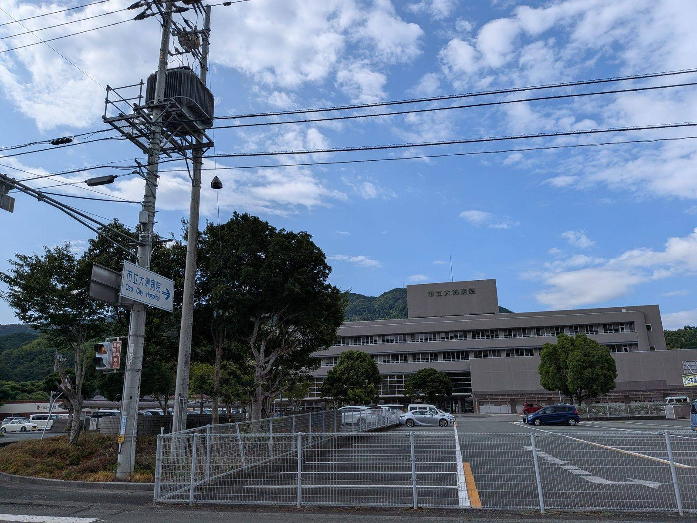

大洲のいま ・ 出典: 市立大洲病院「皮膚科」/厚生労働省 医師・歯科医師・薬剤師統計/大洲市令和８年度当初予算の概要

市立大洲病院の診療案内を見ていて、手が止まったページがあった。
皮膚科に、常勤医がいない。
令和８年８月１日から、非常勤医４人による曜日別のローテーションで回している。ページの更新日は2026年７月29日だった。
最初はただの診療案内だと思って開いたのだが、読み込むほど地方医療の構造が透けて見えるページだった。
まず基本の枠を確認する。診療があるのは火・木・金曜のみ。月曜と水曜は休診だ。
受付時間は、午前が８時15分から11時30分まで。木曜午後は１時30分から４時30分まで。
上限を足すと週140名。年50週として年間7,000人が理論上の上限になる。
もちろん常に満枠ではないだろうが、枠そのものに天井があるという診療体制であることは確かだ。
このページで一番驚いたのが、この一文だった。上限に達した場合、受付時間の終了を待たずに締め切られることがあると明記されている。
つまり８時15分に受付が始まっても、11時30分まで開いている保証はない。朝早く行かないと診てもらえない日があり得る、ということだ。
なぜこんな運用になるのか。答えは診療体制のほうにある。常勤医なら、混んだ日は残って診ることができる。
その日だけ来ている非常勤医は、次の勤務先や本務がある。時間を延ばすという選択肢が、そもそも構造的に存在しない。
だから上限は「診療の質を守るため」の数字であると同時に、「その日、その医師が確実に帰れる人数」の数字でもある。
人数上限が曜日ごとに45名・35名・20名・40名とばらついているのも、担当する医師と時間枠がそれぞれ違うからだと考えると筋が通る。
一般的な診療科の案内ではあまり見かけない運用だが、これは病院が意地悪をしているのではなく、正直に書いているということになる。書かなければ、患者は昼前に行って追い返される。
「皮膚科で常勤医が確保できない」というのが大洲だけの事情なのか気になったので、国の統計を見た。
厚生労働省の令和６年医師・歯科医師・薬剤師統計によると、医療施設に従事する医師は全国で331,092人。
このうち皮膚科を主たる診療科とする医師は10,043人（3.0％）だった。
皮膚科医は、内科医の６分の１しかいない。全国で１万人だ。日本の市区町村数は1,741なので、単純に割ると１自治体あたり5.8人という規模になる。
これは全国の総数を機械的に割った数字にすぎないが、桁の感覚としては役に立つ。
もう一つ、この統計には特徴的な数字がある。皮膚科は女性医師の比率が高い診療科で、女性医師の主たる診療科としては内科（14.9％）、小児科（8.3％）に次いで眼科と並ぶ6.5％。一方、男性では1.9％にとどまる。
平均年齢は51.4歳で、全診療科の平均50.6歳よりわずかに高い。
要するにもともと絶対数が少なく、都市部に偏在しやすい診療科だということになる。
市立大洲病院が常勤医を置けないのは、この病院固有の事情というより、１万人しかいない全国のパイの奪い合いで地方が負けているという構図に近い。
では常勤医が置けないとき、病院はどうするか。市立大洲病院が採ったのは「４人の非常勤医で曜日を分ける」という方法だった。
火曜に１人、木曜午前に１人、木曜午後に１人、金曜に１人。４人が別々の曜日を担当する形になっている。
担当医は変更される場合があるため、事前に電話で確認するよう案内されている。
この方式には利点がある。常勤医１人分の勤務枠を、４人で分担すれば埋められる。
大学病院や他の医療機関に籍を置く医師が、週１日なら出せる、という形で成立する。
皮膚科をゼロにするより、週３日でも開けているほうが患者にとっては明らかによい。
一方で弱点も明快だ。継続診療がやりにくい。火曜に診てもらった患者が金曜に来ると、別の医師にあたる可能性がある。
皮膚科は経過を目で追う診療科なので、同じ医師が同じ患部の変化を見る意味は小さくない。
そして１人が抜けると、その曜日がまるごと消える。常勤医が１人いる体制なら他の医師が代診を組めるが、曜日で分担している体制では、代わりが利きにくい。
月曜と水曜が休診なのも、単純に人が足りていないからだと読める。
「常勤医がいない」で終わる話なのか、それとも動いているのか。
令和８年度当初予算の概要を開いたら、関係する事業が３つ見つかった。
１つ目の2,459万６千円という委託料が目を引く。医師を１人雇う話ではなく、「この地域にどの医療機能を残すか」を外部に委託して検討するという段階の予算だ。
個別の診療科をどうこうする前に、地区全体の設計から考え直す局面に入っている、ということになる。
３つ目の上限360万円も相当な額だ。薬剤師１人の奨学金返還を最大360万円まで肩代わりする。
これは子育て支援策の一覧にも載っているのだが、実態としては医療人材の確保策である。それだけ人が来ないということだと思う。
なお病院事業会計そのものは令和８年度で40億426万６千円（前年度比３億2,567万１千円増）。
うち器械備品購入費が４億1,500万円で、その大半は病院情報システム（電子カルテ）の更新３億9,540万円だ。
医師は非常勤４人で回しているが、電子カルテには４億円近くかける。
設備は買えるが人は買えない、という地方病院の現実がここに出ている。
このページを最初はただの診療案内だと思っていた。でも「人数の上限に達したら受付時間内でも終了する」という一文の後ろには、全国に１万人しかいない診療科と、４人の非常勤医で曜日を割る運用と、2,459万円の検討委託料が並んでいる。
皮膚科を受診する予定があるなら、覚えておくべきことは２つだ。
診療は火・木・金だけ。そして混む日は、受付時間内でも早く閉まる。行く前に電話で確認するのが確実だと思う。